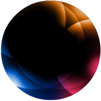
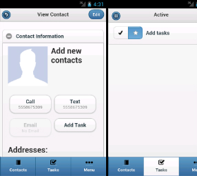
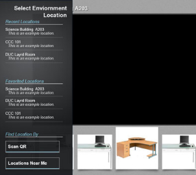
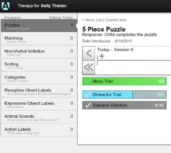
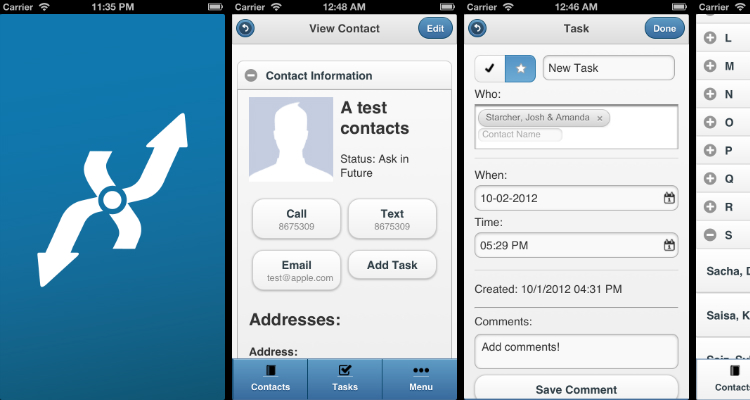

256 Design
Portfolio For
Spencer Oberstadt
Blog
I write some things sometimes. There aren't a lot of things that I
find out myself, but I want to put those few things out there. I
encourage you to check it out, maybe bookmark some of the posts if
they are something you work with.
> 256 Blog
Programming isn't just a job, it's a mindset. I am passionate
about finding different ways to look at a system or process. The
trendy technology and tools are important, and exciting, but you
don't always use your brand new stud finder to fix the kitchen sink.
Anyone can make a new Facebook or blog site, but what gets me coming
back to a project is if it actually helps real people.

MPDX - Mobile
June 2012 - Current
Coolness: 10
Main Technology: HTML/CSS/JS
Click Again To See More
Project Tansparency
September 2011 - March 2012
Coolness: 9
Main Technology: Java for Android
Click Again To See More

Mobile Enviornment Detection
November 2011
Coolness: 5
Click Again To See More

Data Entry App for Autism Therapy
July 2011 - November 2011
Coolness: 6
Main Technology: Adobe Flex
Click Again To See More
MPDX - Mobile
Ministy Partner Development Connexion

In June 2012, I traveled to Orlando, FL and worked with a team on to
build a mobile access portal for MPDX.org. MPDX is being designed as the
new web application solution for missionaries who raise their own
financial support. My role was leading the mobile apps team where I
worked with another member to train him in javascript development and
project management. We built the apps using Phonegap and are currently
targetting Android and iOS devices with offline applications and is
accessable via the web. We chose PhoneGap because we wanted be able to
have a fast start-up time and target every and any smart phone.
During the first week of the project, we worked to explore dynamic view
(HTML page) creation techniques and other tools we would need to develop
for a PhoneGap application. To help streamline development and expansion,
after about a week of developement, we looked into Javascript MVC
(more info)
frameworks and descided on using Backbone.js. After getting the hang of
Backbone.js, we were cooking with gas and had a published app on the Play
Store after about 2.5 months, with the last month me working solo.
The app is currently available on the
Android Play Store,
and will be on the Apple App Store soon!
Client
Cru (formally Campus Crusade for Christ)
Time Frame
June 2012 - Present